神成淳司研究会では、学生が一人ひとりテーマを持って個人研究を行い
その研究に対して指導していく形が基本的なスタイルです
授業を通じ、学生個々人が、多様な課題に対応していく素養を養うことを期待します 重要な点は、履修者自身の興味と意欲です
In the Shinjo Atsushi Lab, the basic style is for each student to have their own theme, conduct individual research, and receive supervision.
Through our classes, we expect each student to cultivate the foundation to address diverse challenges.
The most important factor is the student's own interest and motivation.
神成 淳司 / Atsushi ShinjoAtsushi Shinjo
博士（工学） | 慶應義塾大学 環境情報学部 教授Ph.D. | Professor, Keio University SFC
食・農・健康・情報政策領域で、現場とデータをつなぐ社会実装研究に従事。WAGRI などのデータ基盤整備、スマート農業、フードチェーンDX、ヘルスデータ連関などを推進。Engaged in social implementation research connecting field data in food, agriculture, health, and information policy. Promoting data infrastructure (WAGRI), smart agriculture, food chain DX, and health data linkage.
副政府CIO（2014-）/ 情報政策・スマート農業 / データ連携基盤Deputy Government CIO (2014-) / Info Policy, Smart Agri, Data Platforms
AOI-PARC 統括 / ヘルス・フードチェーン実証AOI-PARC Director / Health & Food Chain Demonstration
「スマート農業―自動走行、ロボット技術、ICT・AIの利活用からデータ連携まで」 神成淳司 (エヌ・ティー・エス, 2019年)"Smart Agriculture: From Autonomous Driving, Robot Tech... to Data Linkage" (NTS, 2019)
「サービソロジーへの招待――価値共創によるサービス・イノベーション」 村上輝康・新井民夫・JST 編著 (東京大学出版会, 2017年)"Invitation to Servicology: Service Innovation through Value Co-creation" (Univ. of Tokyo Press, 2017)
「ITと熟練農家の技で稼ぐ AI農業」 神成 淳司 (日経BP社, 2017年)"AI Agriculture: Earning with IT and Veteran Farmer Skills" (Nikkei BP, 2017)
神成淳司研究室でともに切磋琢磨し、 食と農の未来を切り拓く仲間を募集していますJoin us to pioneer the future of food and agriculture at SHINJO Atsushi Lab.
当研究室では毎学期、テクノロジーと現場知を融合させ、社会実装に挑戦したい熱意ある新規メンバーを募集しています。 また、共同研究や実証実験をご希望の企業・自治体の皆様からのご連絡も心よりお待ちしております。We recruit new members every semester. We welcome applications from students who want to challenge social implementation by integrating technology and field knowledge. We also welcome inquiries for joint research from companies and local governments.
食・農・健康を横断し、テクノロジー×現場知で社会実装を推進 データ基盤・設計・運用まで一気通貫で取り組むIntegrating food, agriculture, and health. We drive social implementation with Technology x Field Knowledge, covering everything from data infrastructure to design and operation.
ミッションMission
Mission
農業データ連携基盤や次世代農業者の育成（AI農業）、日本生鮮物流の基盤となるスマートフードチェーンの取り組みなどを通じた社会実装プロジェクトの実現。Realization of social implementation projects through initiatives such as the agricultural data collaboration platform, training the next generation of farmers (AI agriculture), and the smart food chain.
研究会の特徴Features
Features
基本は個人ワークで先生と相談しながら研究を進める。グループディスカッションや「猫本」から「視野・視座・視点」に基づく物事の捉え方を学ぶ。Basically, research is advanced through individual work while consulting with the professor. Students learn how to grasp things based on "field of view, viewpoint, and perspective".
研究会の魅力Appeal
Appeal
研究テーマは農業に限らず自由なので、多種多様な人が集まっており他の学生から学べることが多い。自ら相談すれば、先生の広い人脈や研究の現場から研究を深めるチャンスが得られる。Since research themes are not limited to agriculture, a wide variety of people gather, and there is much to learn from other students. Taking initiative brings chances to deepen research through broad networks.
「スマート農業―自動走行、ロボット技術、ICT・AIの利活用からデータ連携まで」 神成淳司 (エヌ・ティー・エス, 2019年)"Smart Agriculture: From Autonomous Driving, Robot Tech... to Data Linkage" (NTS, 2019)
「サービソロジーへの招待――価値共創によるサービス・イノベーション」 村上輝康・新井民夫・JST 編著 (東京大学出版会, 2017年)"Invitation to Servicology: Service Innovation through Value Co-creation" (Univ. of Tokyo Press, 2017)
「ITと熟練農家の技で稼ぐ AI農業」 神成 淳司 (日経BP社, 2017年)"AI Agriculture: Earning with IT and Veteran Farmer Skills" (Nikkei BP, 2017)
教員・スタッフFaculty / Staff
中島 伸彦Nobuhiko Nakajima
1991年4月 野村総合研究所入社 2014年8月～2020年8月 内閣官房 2020年8月～ 警察庁 長官官房技術企画課Apr 1991: Nomura Research Institute Aug 2014 - Aug 2020: Cabinet Secretariat Aug 2020 - Present: National Police Agency
信朝 裕行Hiroyuki Nobutomo
特任准教授Project Assoc. Professor
東京大学工学部卒。 三菱総合研究所、電通等にて新規事業開発や戦略立案を指揮。 2015年より内閣官房 IT戦略室にてIT利活用戦略推進官等を歴任し、官民データ連携基盤構築を推進。 2019年4月より慶應義塾大学 特任准教授。 デジタル庁設立を見据えたDX支援やルール策定にも従事。B.Eng., The University of Tokyo. Led business dev. and strategic planning at MRI and Dentsu. Since 2015, promoted IT strategies and public-private data collaboration at the Cabinet Secretariat. Since Apr 2019, Project Assoc. Prof. at Keio Univ. Engaged in DX support and policy making toward the establishment of the Digital Agency.
島津 秀雄Hideo Shimazu
長尾 たつきTatsuki Nagao
学生Students
水口 貴咲Kisaki Mizuguchi
4年4th Year Student
小川 朋Tomo Ogawa
4年4th Year Student
久保 華奈多Kanata Kubo
4年4th Year Student
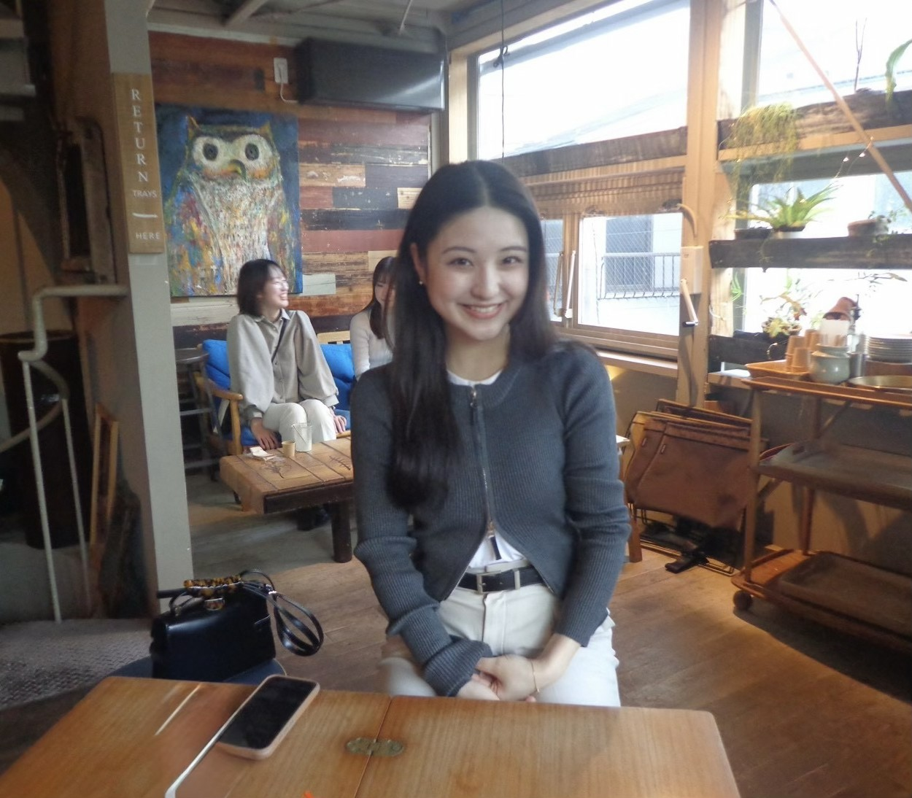
叶 くえいKuei Kano
4年4th Year Student
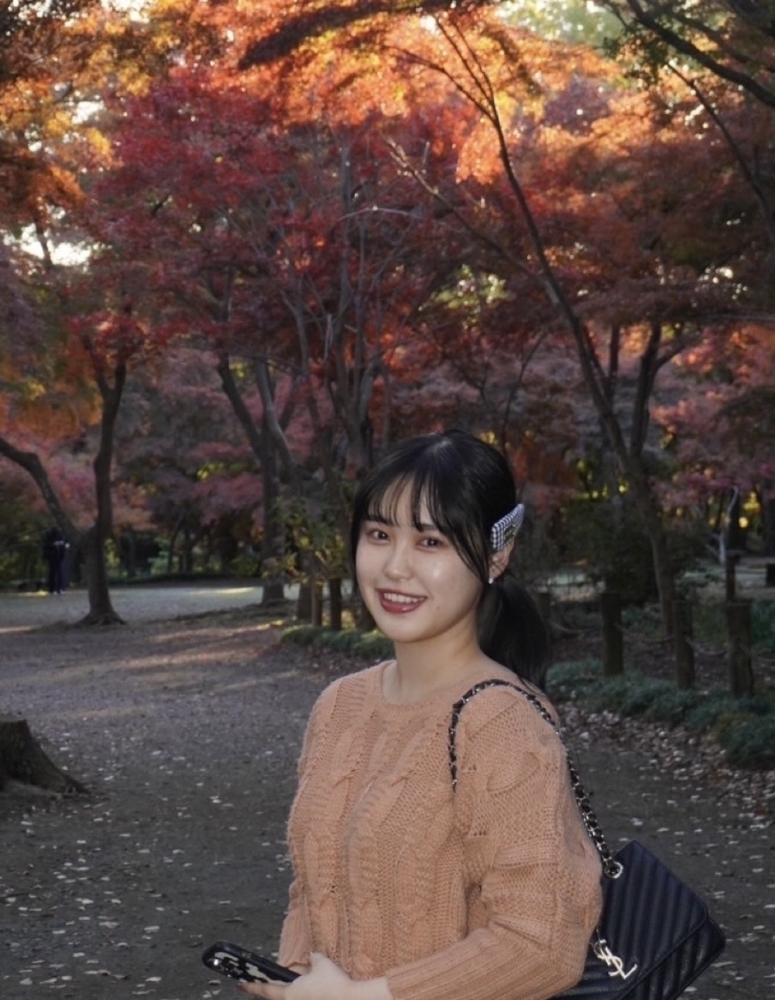
古川 万里子Mariko Furukawa
4年4th Year Student
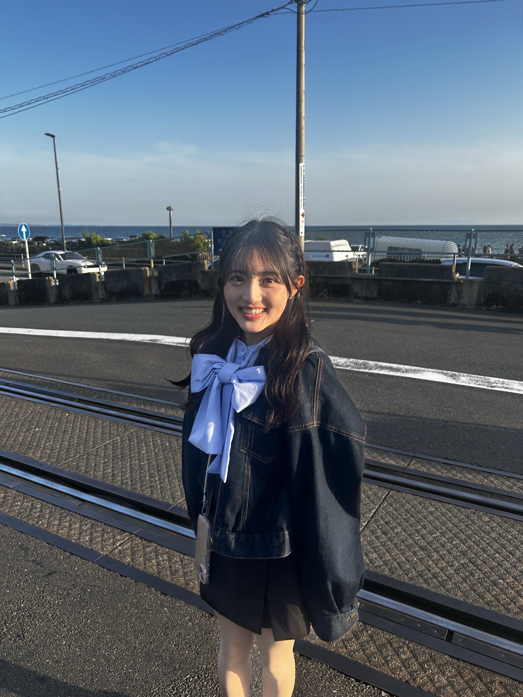
齋藤 未央Mio Saito
4年4th Year Student
垣田 幸海Yukimi Kakita
4年4th Year Student
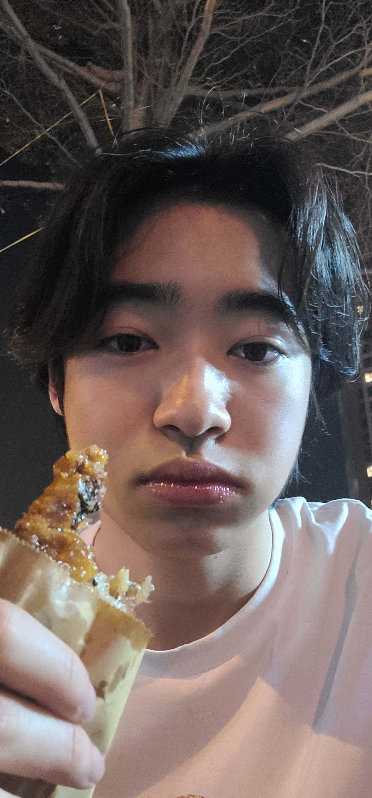
西野 圭達Keitatsu Nishino
4年4th Year Student
小野 侑誠Yusei Ono
3年3rd Year Student
谷津 帆香Honoka Yatsu
3年3rd Year Student
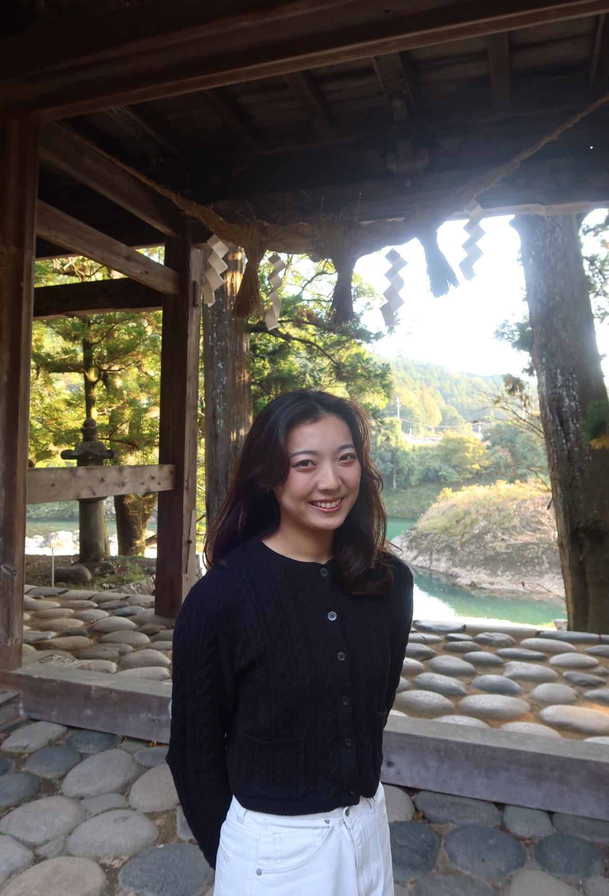
加田 弓乃Yumino Kada
3年3rd Year Student
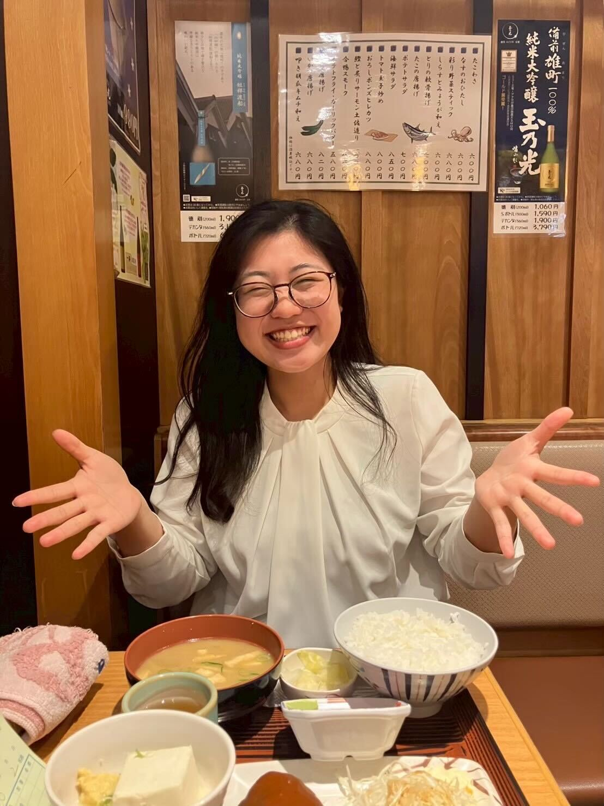
尾竹 梓Azusa Otake
3年3rd Year Student
加納 颯人Hayato Kano
3年3rd Year Student
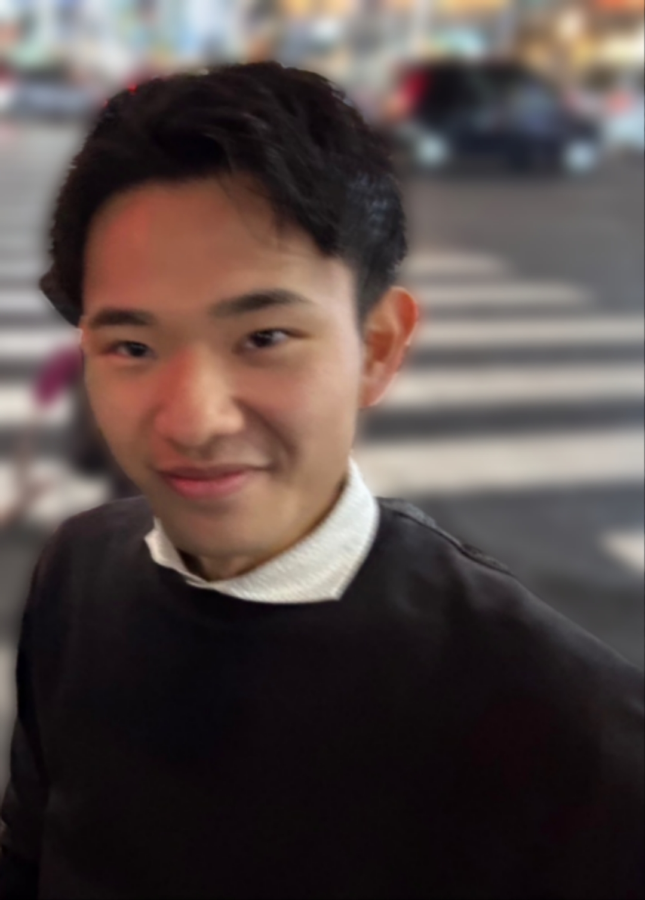
高橋 翼Tsubasa Takahashi
3年3rd Year Student
梶山 勇人Hayato Kajiyama
3年3rd Year Student
酒井 やえYae Sakai
2年2nd Year Student
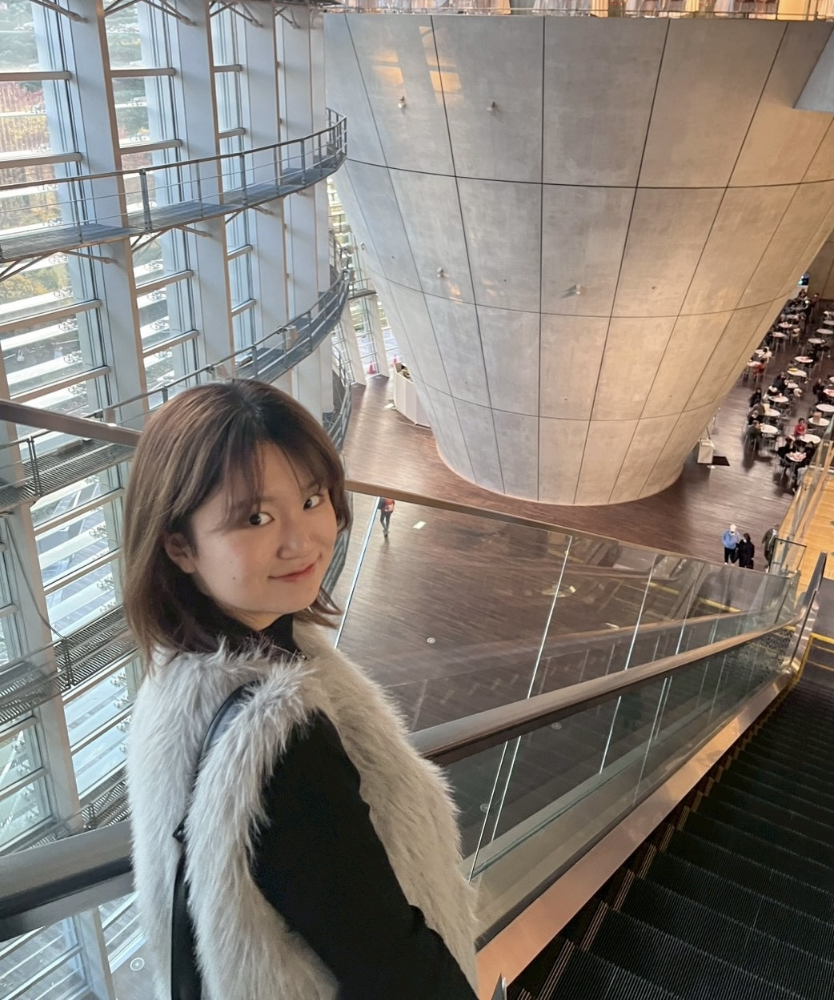
鈴木 花梨Karin Suzuki
2年2nd Year Student
Alumni SpotlightAlumni Spotlight
緒方 遥人Haruto Ogata
卒業生Alumni
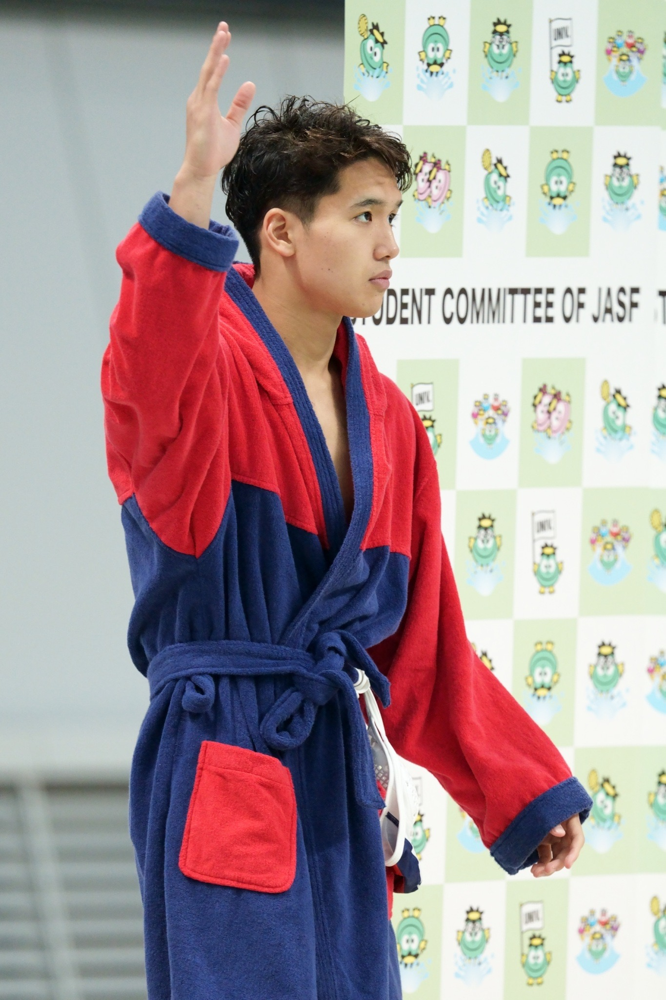
片山 太治朗Tajiro Katayama
卒業生Alumni
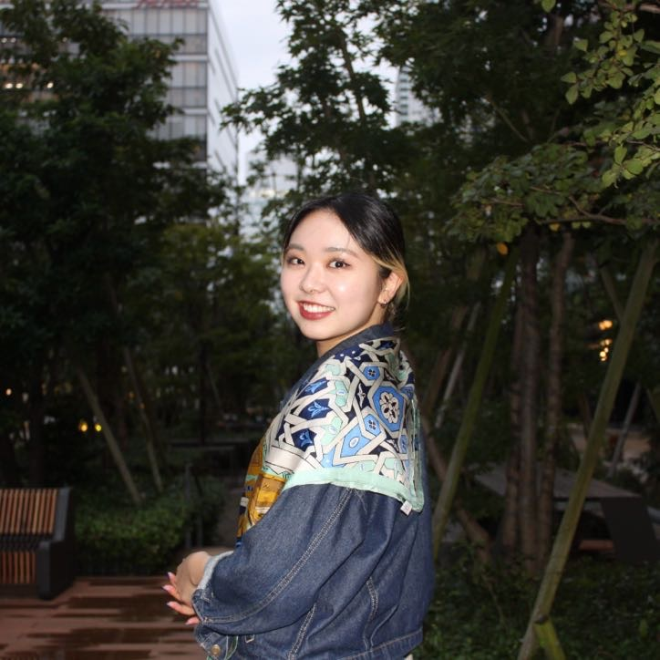
小林 雪音Yukine Kobayashi
卒業生Alumni
Course
神成淳司研究室の関連コース一覧List of related courses and seminars
教員は、履修者自身が興味を掘り下げ、リサーチクエスチョンを設定し、具体的な研究テーマとして取り組むことを支援します。The "food" sector is expected to grow significantly. We supervise individual research based on students' interests in "food", centering on realizing sustainable food environments in local communities.
※今度の参加企業は調整中（第一回授業時に発表）Group work lecture assuming the use of generative AI. We address real-world themes, aiming to improve problem-finding and presentation skills through problem-solving discussions.
オムニバス形式のテーマ： センサ素子と無線センサユニット（高汐）/ LEGO MindStorm 自律移動ロボット（神成）/ 自走式機械の構築と制御（大前）Practice the PDCA cycle of manufacturing. Focusing on "Evaluation -> Improvement", we discuss the manufacturing process practically.
スポーツによる地域振興Regional Promotion through Sports
秋Fall
寄附講座 / 2単位Endowed Course / 2 Credits
スポーツを核とした地域振興に着目し、イベント興行やプロスポーツ誘致等による地域経済の発展に加え、健康増進や教育、新規ビジネスといった多様な波及効果について学びます。実務者を講師に招き、ワークショップ方式で具体的な解決法を検討します。Focusing on regional promotion centered on sports, we learn about the development of the regional economy and diverse ripple effects such as health promotion, education, and new businesses.
News
ニュースLatest News
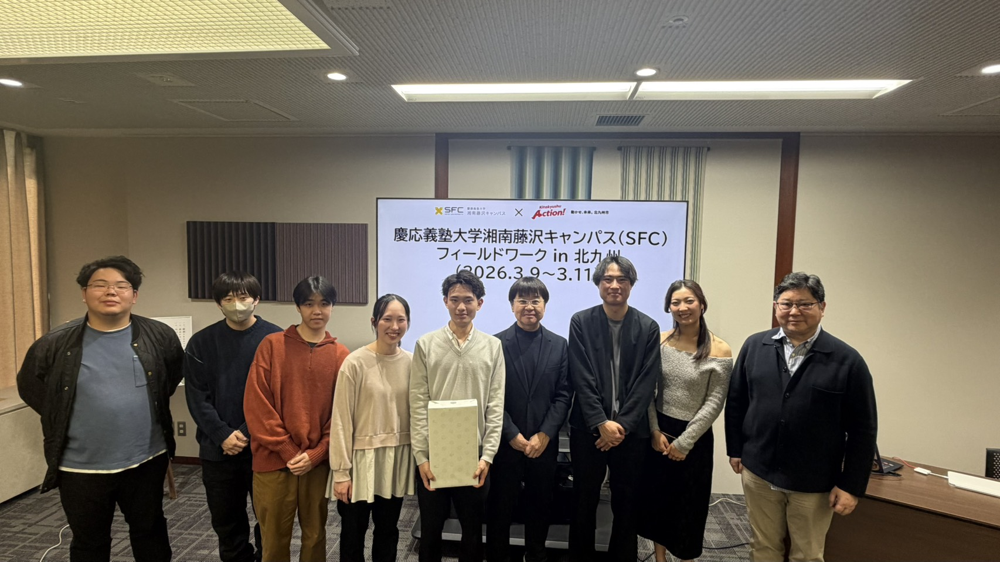
2026.03.11プロジェクトProject論文・発表Publication
2026年度春学期特別研究プロジェクトを北九州で行いました。Conducted the Spring 2026 Special Research Project in Kitakyushu.
「食で北九州市に若者を惹きつける」という大きな枠の中で、各グループ個別の視点でテーマを決めて市役所へ提案を行いました。 令和8年3月9日(月)～3月11日(水)Under the broad theme of "Attracting young people to Kitakyushu City through food," each group decided on a theme from their unique perspective and made a proposal to the city hall. March 9 (Mon) - 11 (Wed), 2026
2025年度秋学期特別研究プロジェクトを十勝地域で行いました。Conducted the Fall 2025 Special Research Project in the Tokachi region.
十勝の大規模農業についてスマート農業の実践とデータ連携を現地で学び、農家さんへのヒアリングを行いました。 令和7年9月1日(月)～9月4日(木)We learned about the practice of smart agriculture and data collaboration in large-scale agriculture in Tokachi on-site, and conducted interviews with farmers. September 1 (Mon) - 4 (Thu), 2025
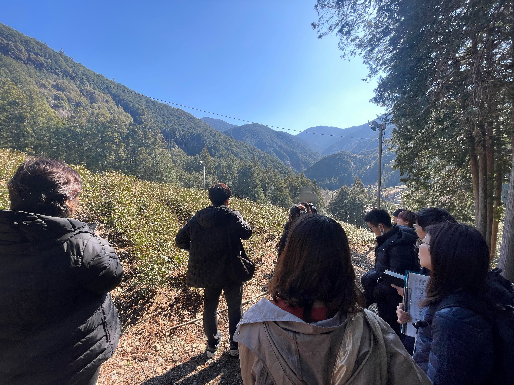
2025.03.15プロジェクトProject論文・発表Publication
2025年度春学期特別研究プロジェクトを静岡市で行いました。Conducted the Spring 2025 Special Research Project in Shizuoka City.
市場や給食センター、茶畑での視察を行い、各グループ個別の視点でテーマを決めて市役所へ提案を行いました。 令和7年3月19日(水)～3月21日(金)We inspected markets, school lunch centers, and tea plantations, and each group decided on a theme from their unique perspective and made a proposal to the city hall. March 19 (Wed) - 21 (Fri), 2025
2025.1.23募集終了Closed
2026年度の研究会メンバーの募集を締め切りました。Recruitment for 2026 lab members has been closed.
たくさんのご応募ありがとうございました。Thank you very much for your numerous applications.
Contact
見学・共同研究のご相談はメールでご連絡くださいPlease contact us by email for visits or joint research inquiries.
神成 淳司 教授 / Prof. Atsushi ShinjoProf. Atsushi Shinjo
Email: kaminari-core@sfc.keio.ac.jp
見学・訪問Visits
研究室見学をご希望の方は、事前にメールでご連絡ください。 共同研究・技術相談も歓迎します。Please contact us by email in advance if you wish to visit the lab. We also welcome joint research and technical consultations.